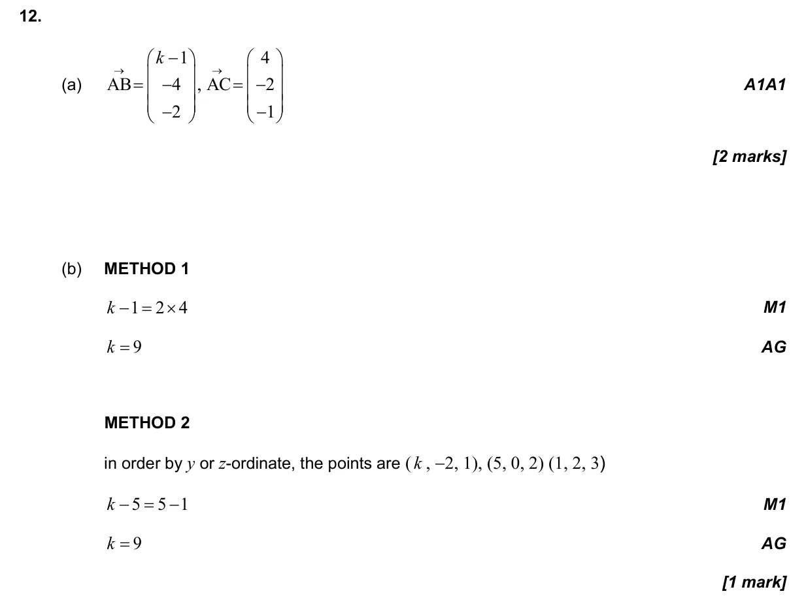
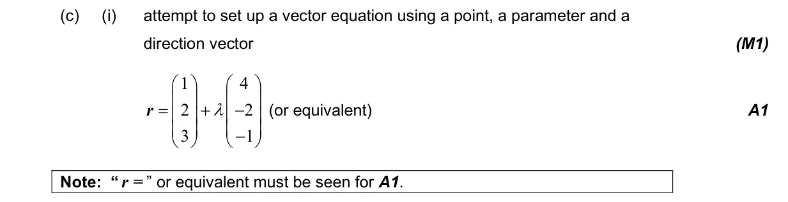
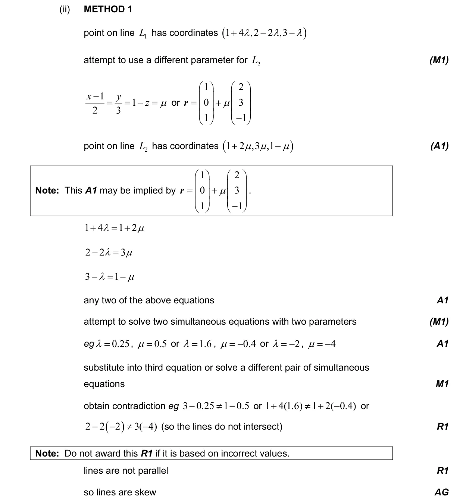
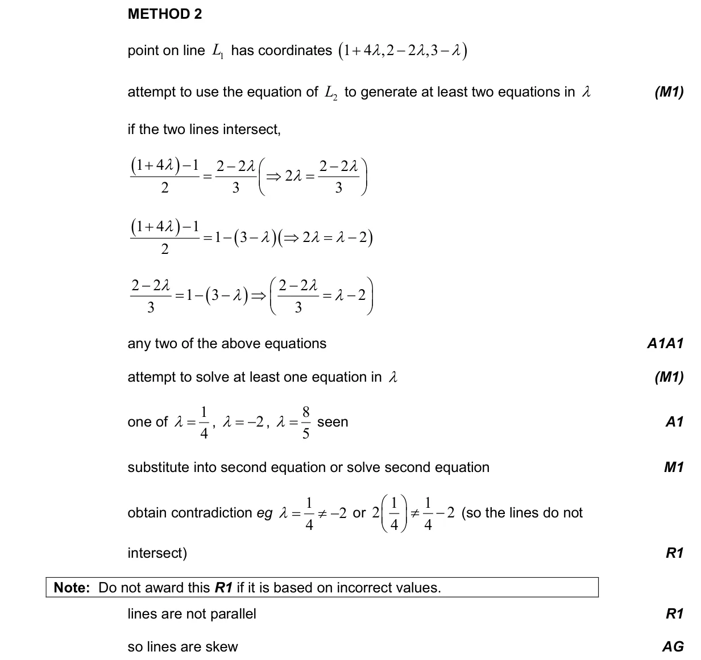
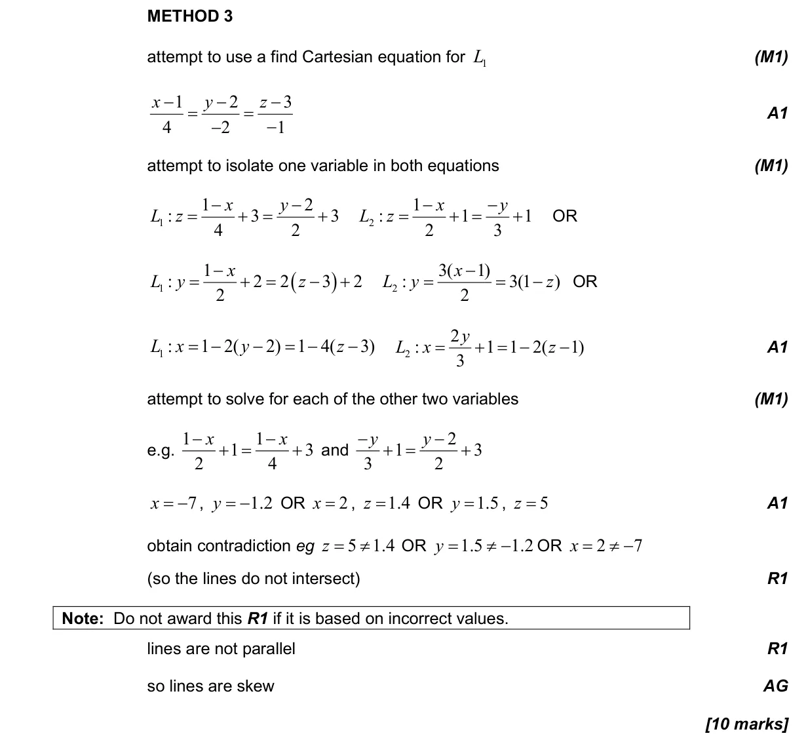
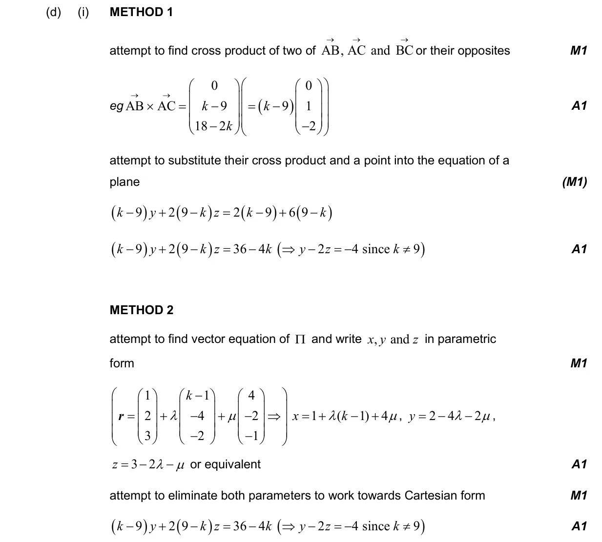
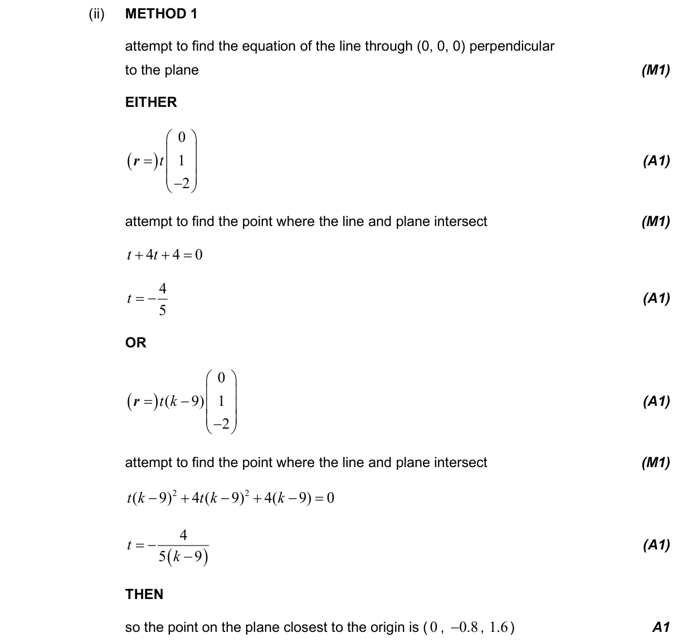
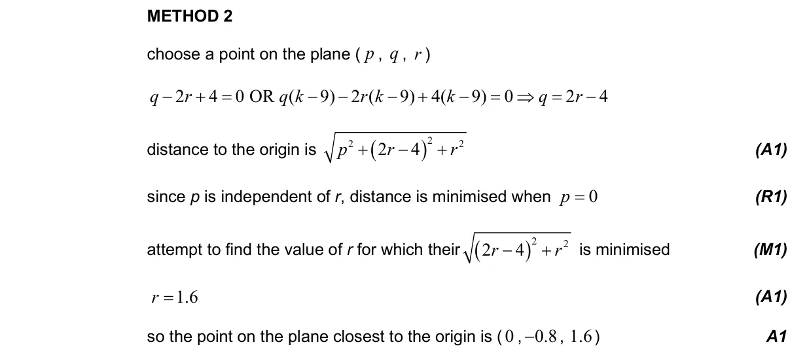
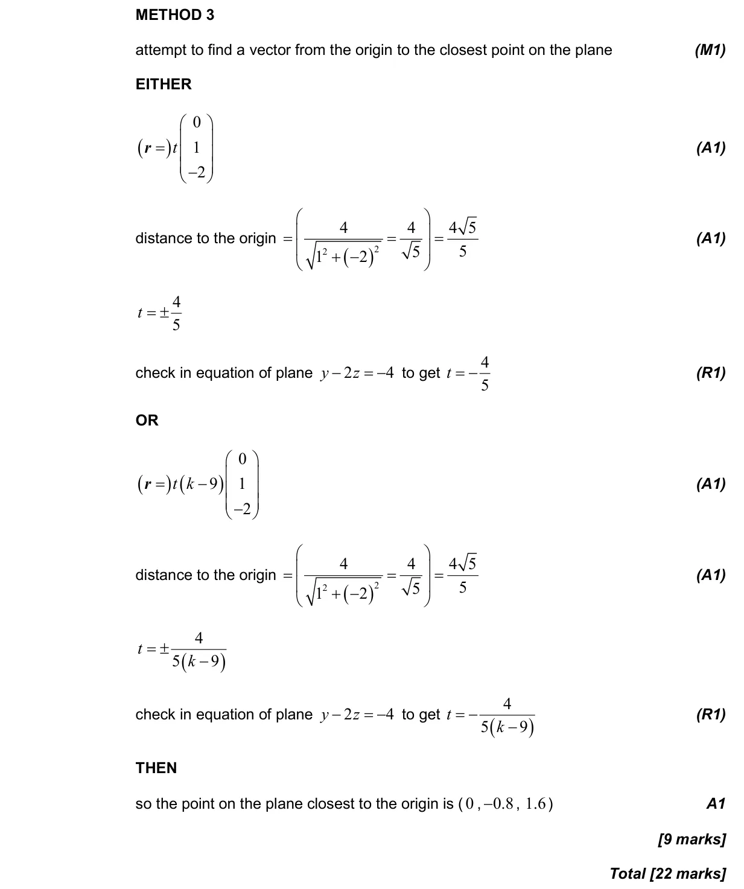

22 marks P2 TZ0 Section B Calculator 3.15 Coincident, parallel, intersecting and skew lines3.14 Vector equation of a line in two and three dimensions3.12 Vectors: concepts, components and algebra3.17 Vector and Cartesian equations of a plane3.18 Intersections and angles between lines and planes3.16 The vector product Question Hide breakdown abcd Markscheme 